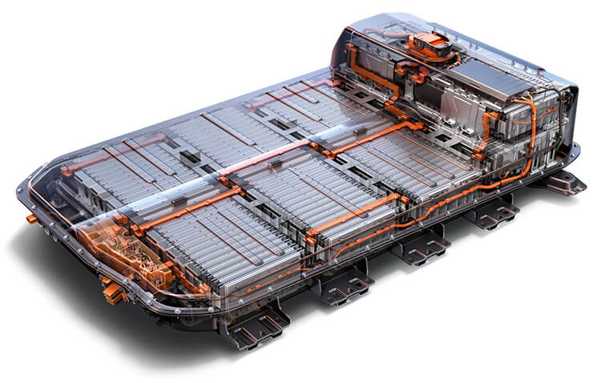
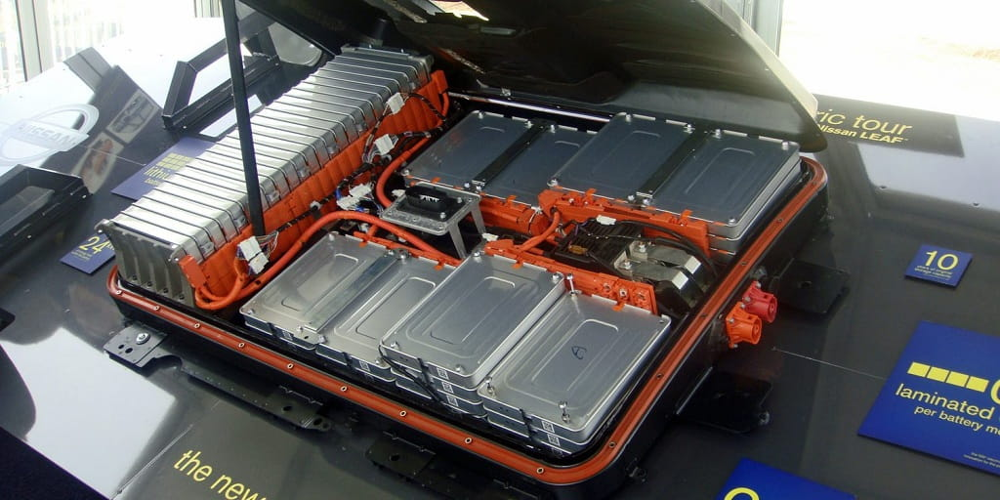

Исследователи разрабатывают жидкие аккумуляторы для электромобилей, способные заряжать машину за несколько минут.Преимущества электрических машин известны всем: они экологичны и не вредят окружающей среде. Однако у них есть один существенный минус — их зарядки нужно ждать довольно долго. Технология "жидкого аккумулятора" поможет делать это за считанные минуты.
Помочь в решении этой проблемы могут так называемые "перезаправляемые батареи" — ионно-литиевые элементы, которые при истощении электролита, приводящего их в действие, могут пополняться свежезаряженной жидкостью вместо стационарной зарядки. Другими словами, такой электромобиль можно будет заправлять и с помощью привычного шланга.
Ученые работают над созданием перезаправляемых или так называемых проточных аккумуляторов, которые можно заправлять за считаные минуты на обширной сети конвертированных заправочных станций. Это новшество может сделать электромобили более привлекательными для водителей, которые опасаются длительного времени зарядки.
Ли Кронин (Lee Cronin), сотрудник Университета Глазго и один из ведущих разработчиков этой технологии, уверен, что такие батареи превратят электромобили в достойную альтернативу обычной машине, а опасения длинных поездок из-за страха разрядки аккумулятора исчезнут. Сторонники идеи даже полагают, что под эту цель можно переоборудовать существующую трубопроводную инфраструктуру, используя ее для перекачивания аккумуляторной жидкости вместо бензина. Команда Кронина работает над увеличением плотности энергии проточных аккумуляторов, создавая электролит с высокой концентрацией оксида металла. Их проточные аккумуляторы могут быть маленькими и достаточно легкими для использования в электромобилях.
Одновременно с этим другая группа исследователей под руководством сотрудника Университета Пердью Джона Кушмана (John Cushman) объявила, что создала жидкую батарею, в три-пять раз превышающую обычную плотность энергии, перекачивая электролит через несколько элементов батареи на высокой скорости. В 2016 году Кушман стал одним из основателей стартапа под названием IFBattery.
Как и литий-ионные аккумуляторы, которые сегодня используются в большинстве электромобилей на дорогах, проточные аккумуляторы выделяют энергию в результате химических реакций между концами аккумулятора и электролитом. В литий-ионной батарее электролит находится между концами батареи; когда он истощается, его необходимо перезарядить. В проточной батарее электролит прокачивается из резервуара через батарею: при истощении его можно просто поменять на свежую партию.
Однако, по словам некоторых экспертов, у технологии проточных батарей все еще существуют серьезные технические препятствия, которые необходимо преодолеть, прежде чем они станут практичными. И, как ни странно, еще одним фактором может быть потребительский импульс, связанный с идеей о том, что электромобиль — то, что вы можете самостоятельно зарядить у себя дома. Профессор Йельского университета, химик Хайлян Ванг (Hailiang Wang) называет новую разработку возможным "переломным моментом", но говорит, что есть препятствия, которые необходимо преодолеть, включая стоимость и надежность технологии.
Сложно сказать, когда транспортные средства с жидкими аккумуляторами могут появиться на рынке. Кушман говорит, что надеется протестировать технологию в ближайшие три года, а Кронин рассчитывает потратить на тестирование электролита до 18 месяцев. Тем не менее оба разработчика сходятся во мнении, что все зависит от того, смогут ли исследовательские группы получить должное финансирование и партнерские соглашения, необходимые для производства автомобилей с подобной технологией. Более того, даже с их преимуществом не ясно, насколько хорошо проточные батареи будут конкурировать с литий-ионными батареями, которые годами доминировали на рынке.